Front Seat Cushion Cover Replacement
Front Seat Cushion Cover ReplacementSpecial Tools Required
KTC trim tool set SOJATP2014 *
* Available through the American Honda Tool and Equipment Program
2-door
SRS components are located in this area. Review the SRS component locations and the precautions and procedures before doing repairs or service.
- Check the operation of the driver's seat position sensor after any of these actions:
- Driver's seat position sensor replacement
- Cover plate (front side of driver's seat slide rail) replacement
- Calibrate the ODS unit after any of the these actions:
- Front passenger's seat replacement (including any seat components)
- Replacement of the seat weight sensors
- After a vehicle collision
NOTE:
- Use the appropriate tool from the KTC trim tool set to avoid damage when prying components.
- Take care not to tear the seams of damage the seat covers.
- Put on gloves to protect your hands.
1. Remove the front seat.
2. Remove the front seat belt buckle.
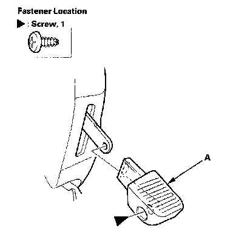
3. Passenger's seat: Remove the screws, then remove the rear seat access knob (A).
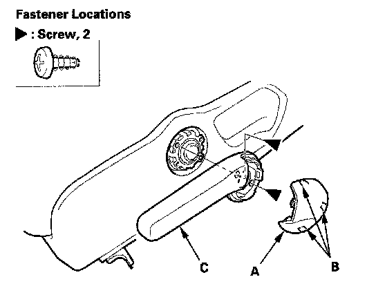
4. Pull back the cap (A) to release the hooks (B), and remove the screws, then remove the height handle (C).
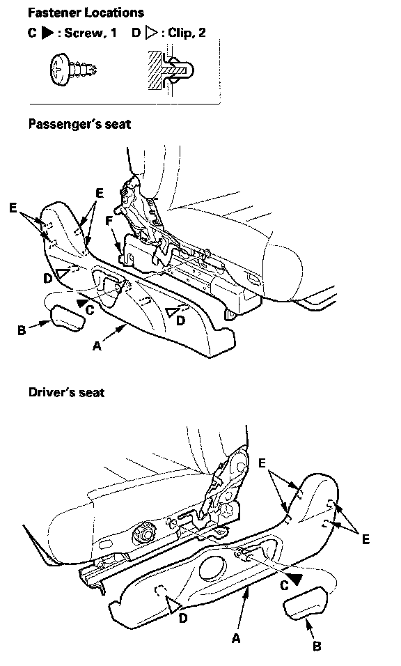
5. Remove the recline outer cover (A).
1. Remove the recline knob (B) and screw (C).
2. Gently pull out the cover, then detach the clips (D), and release the hooks (E).
3. Release the rear seat access lever (F).
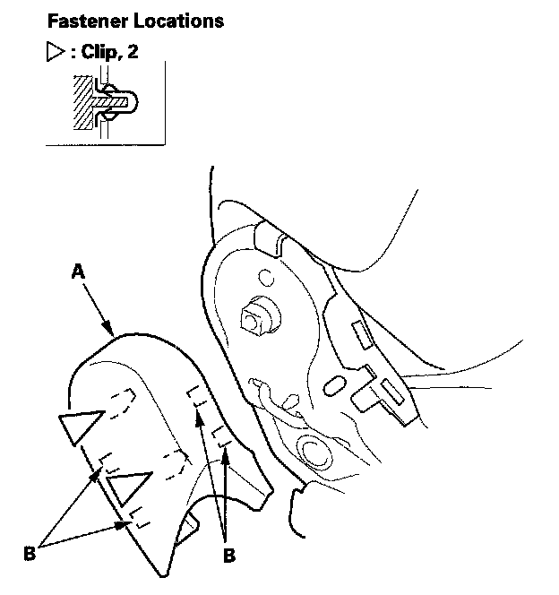
6. Gently pull out the center cover (A), then detach the clips, and release the hooks (B). Driver's seat is shown; passenger's seat is similar.
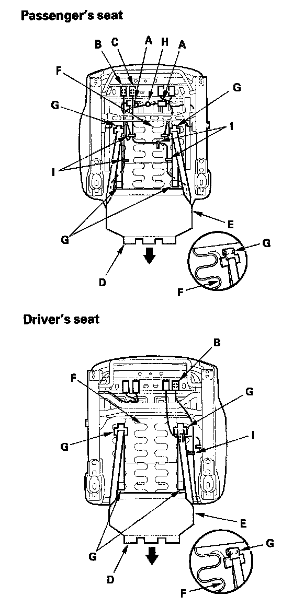
7. From under the seat cushion, disconnect and detach the connectors:
- Passenger's seat:
- Seat weight sensor connectors (A)
- Side airbag connector (B)
- ODS subharness connector (C)
- Driver's seat:
- Side airbag connector (B)
8. Release the hook (D) and seat cushion cover (E) from the seat cushion frame spring (F), then pull the cover back and release the hooks (G). Detach the harness clip (H), and remove the wire ties (I).
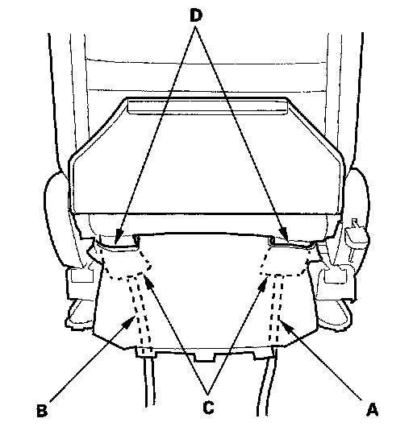
9. Pull the side airbag harness (A), ODS subharness (B) (passenger's seat), and harness guides (C) out through the holes (D) in the seat cushion cover.
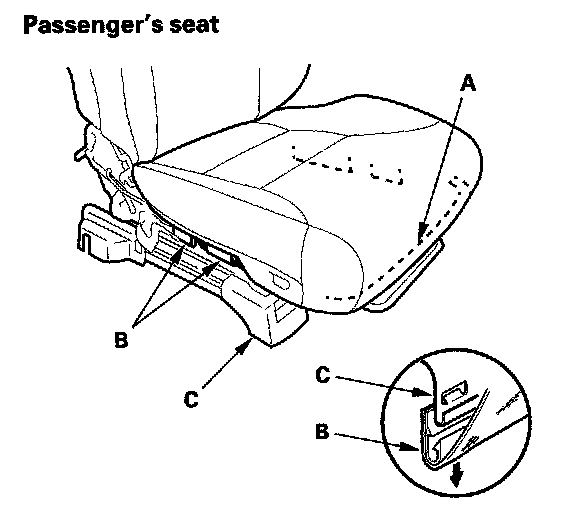
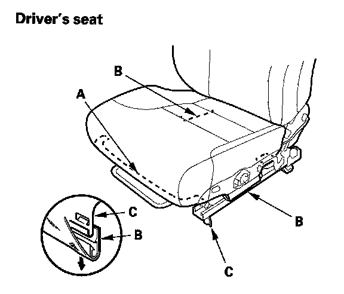
10. Release the hook strips (A, B) from the seat frame (C).
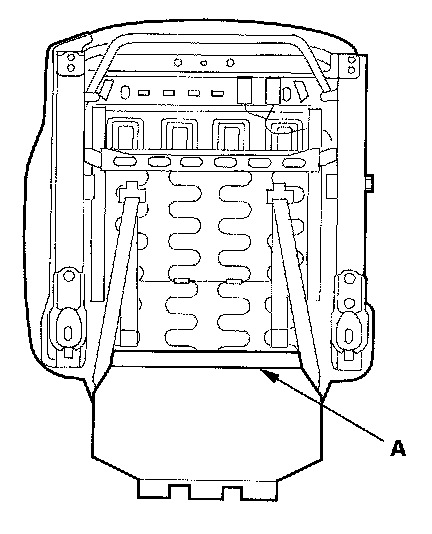
11. Release the hook (A) from under the seat cushion.
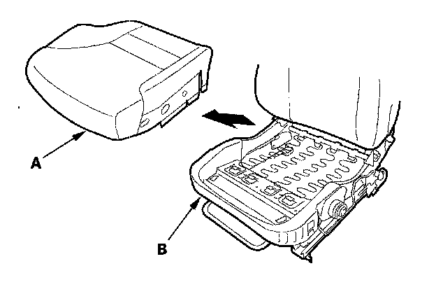
12. Remove the seat cushion cover/pad (A) from the seat frame (8).
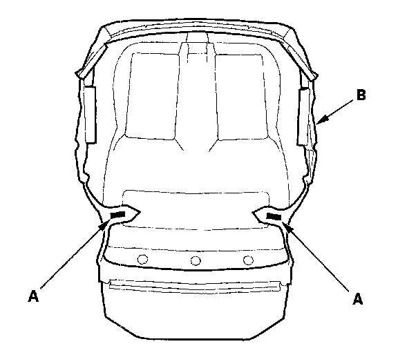
13. Release the chips (A) from under the seat cushion (B).
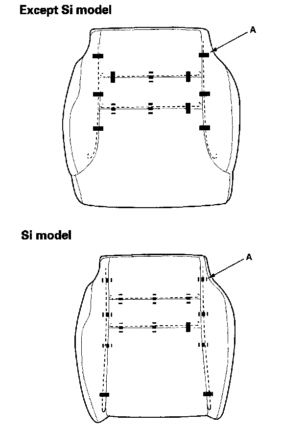
14. Pull back the edge of the seat cushion cover all the way around, and release the clips (A), then remove the seat cushion cover.
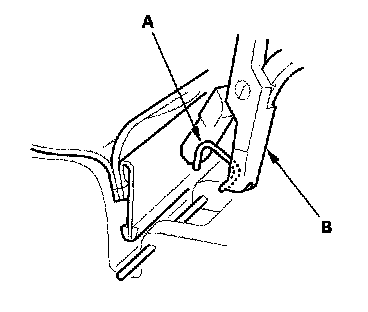
15. Install the cover in the reverse order of removal, and note these items:
- To prevent wrinkles when installing a seat cushion cover, make sure the material is stretched evenly over the pad before securing the clips and hook strips.
- Replace any clips you removed with new ones (A). Install them with commercially available upholstery ring pliers (B).
Special Tools Required
KTC trim tool set SOJATP2014 *
* Available through the American Honda Tool and Equipment Program
4-door
SRS components are located in this area. Review the SRS component locations and the precautions and procedures before doing repairs or service.
- Check the operation of the driver's seat position sensor after any of these actions:
- Driver's seat position sensor replacement
- Cover plate (front side of driver's seat slide rail) replacement
- Calibrate the ODS unit after any of the these actions:
- Front passenger's seat replacement (including any seat components)
- Replacement of the seat weight sensors
- After a vehicle collision
NOTE:
- Use the appropriate tool from the KTC trim tool set to avoid damage when prying components.
- Take care not to tear the seams of damage the seat covers.
- Put on gloves to protect your hands.
1. Remove the front seat.
2. Remove the front seat belt buckle.
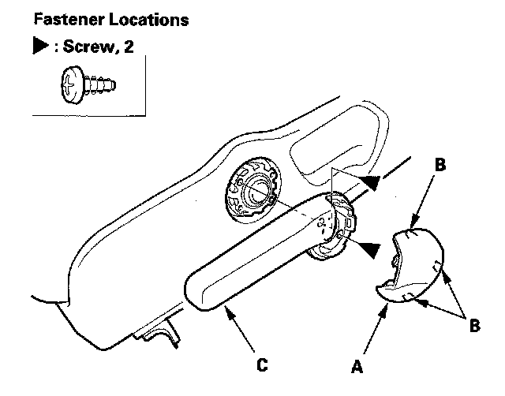
3. Pull back the cap (A) to release the hooks (B), and remove the screws, then remove the height adjuster handle (C).
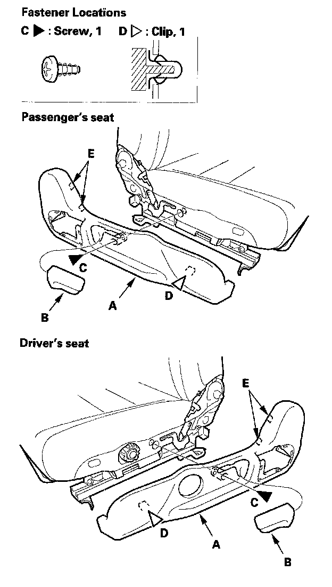
4. Remove the recline cover (A).
1. Remove the recline knob (B) and screw (C).
2. Gently pull out the cover, then detach the clip (D), and release the hooks (E).
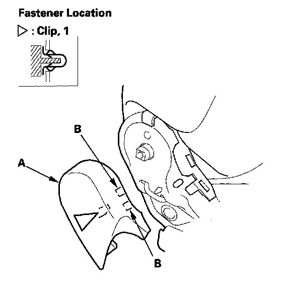
5. Gently pull out the center cover (A), then detach the clip, and release the hooks (B). Driver's seat is shown; passenger's seat is similar
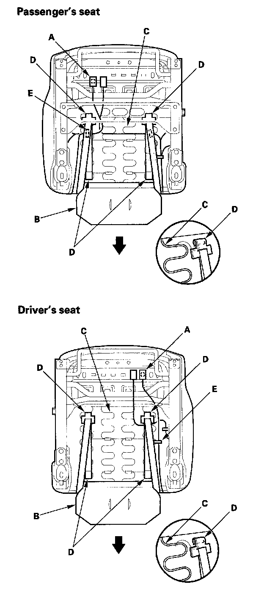
6. From under the seat cushion, detach the side airbag connector clip (A).
7. Release slits in the seat cushion cover (B) from the seat cushion frame spring (C), then pull the cover back. Release the hooks (D) and remove the wire ties (E).
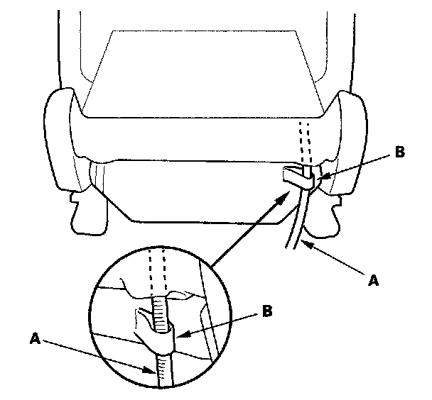
8. Pull the side airbag harness (A) out through the loop (B).
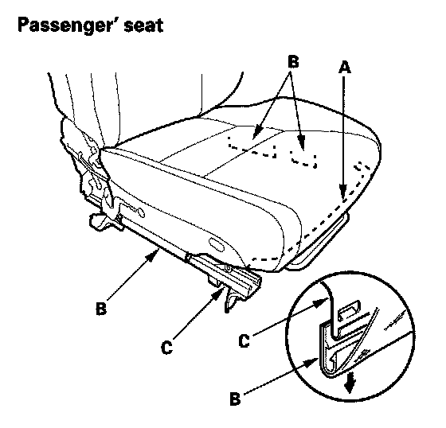
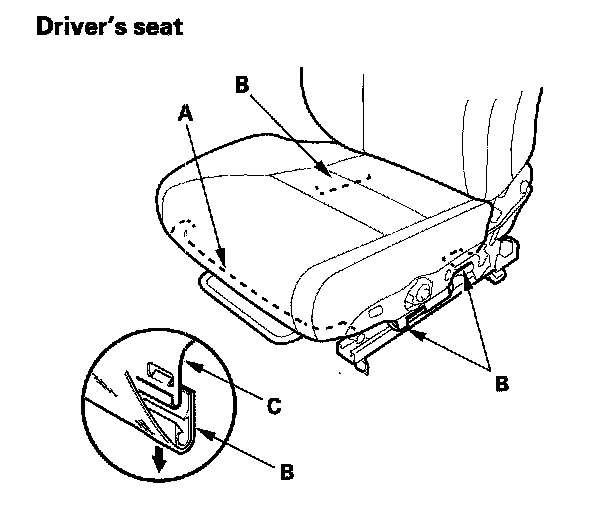
9. Release the hook strips (A, B) from the seat frame (C).
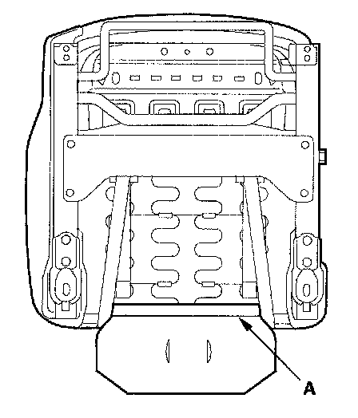
10. Release the hook (A) from under the seat cushion.
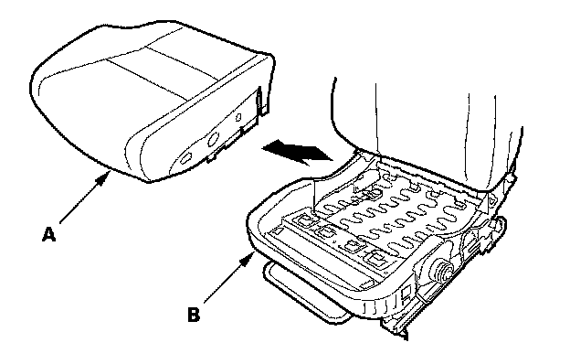
11. Remove the seat cushion cover/pad (A) from the seat frame (B).
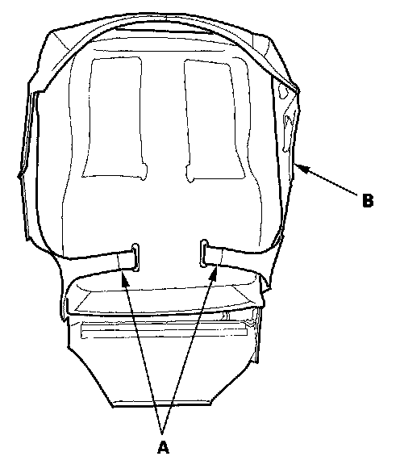
12. Except Si model: Release the hooks (A) from under the seat cushion (B).
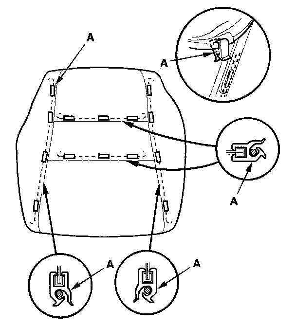
13. Except Si model: Pull back the edge of the seat-back cover all the way around, and release the clips (A), then remove the seat-back cover.
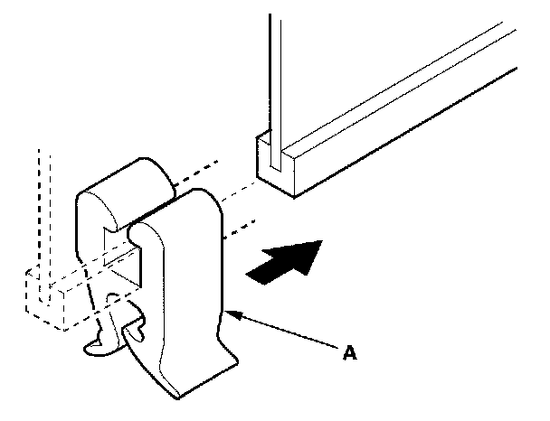
14. Except Si model: Install the cover in the reverse order of removal, and note these items:
- To prevent wrinkles when installing a seat-back cover, make sure the material is stretched evenly over the pad before securing the clips, hooks, and hook strips.
- Replace any clips (A) you removed with new ones.
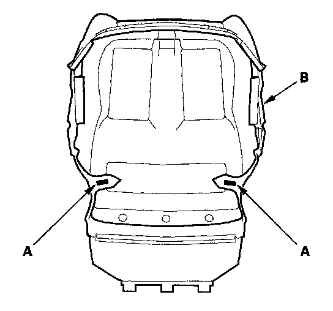
15. Si model: Release the clips (A) from under the seat cushion (B).
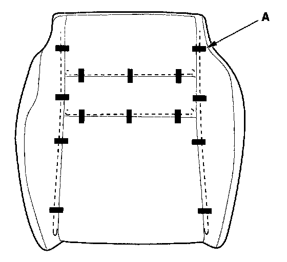
16. Si model: Pull back the edge of the seat cushion cover all the way around, and release the clips (A), then remove the seat cushion cover.
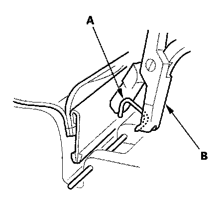
17. Si model: Install the cover in the reverse order of removal, and note these items:
- To prevent wrinkles when installing a seat cushion cover, make sure the material is stretched evenly over the pad before securing the clips and hook strips.
- Replace any clips (A) you removed with new ones. Install them with commercially available upholstery ring pliers (B).